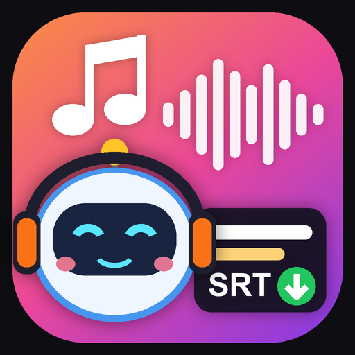

小柯機器人SUNO工具
批量下載 Suno 的 MP3 ＋ SRT 字幕，檔名和 Suno 歌名一樣．邊聽邊看字幕．
下載安裝
功能
- 登入自己的 Suno 帳號，一次讀取全部歌曲，或抓取某個工作區、播放清單。
- 批量下載 MP3、SRT 字幕、LRC、歌詞、封面、WAV；檔名同 Suno 歌名，同名的歌自動加 (1)，MP3 與 SRT 一定同名。
- SRT 用 Suno 的對時歌詞產生，可設定提早秒數，自動去掉段落標籤與括號裡的編曲說明。
- 邊聽邊看字幕：歌聲唱到哪句，字幕就亮哪句，還能放大成卡拉 OK 畫面。
- MP3／WAV 走 Suno 官方「解鎖並下載」，下載前會告訴您會用掉幾次下載次數；解鎖過的歌不重複扣。
- 手機用 Google 帳號：在電腦版按「📱 帶到手機」，手機掃 QR Code 就登入。
- 小柯助手（OpenAI）、Google 雲端硬碟同步、標記與顏色、語音文字使用說明、自動更新。
本工具為非官方工具，與 Suno 公司無關；只會下載您自己帳號裡有權限的歌曲，請遵守 Suno 的服務條款。